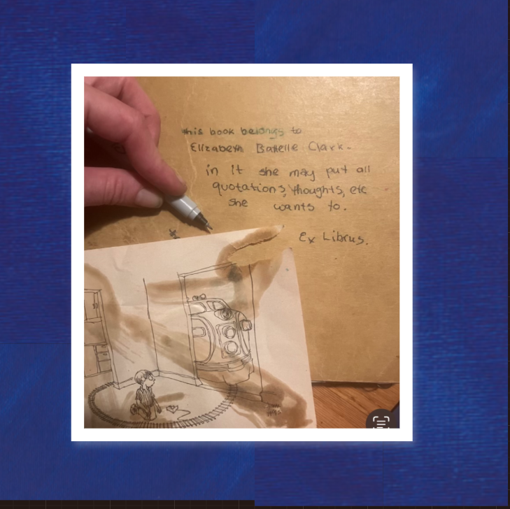
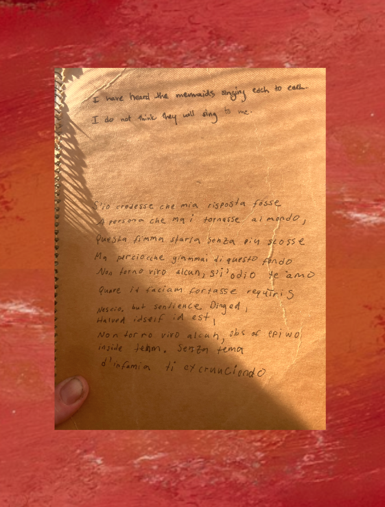

She's up late talking to the moon machine people again,
scheming and pleading for just one envoy of her future selves;
It would spare her so much suffering yet to come.
But they giggle. The reception cackles,
and you know when they all start talking at once,
they're just waggling the dial through the gambit of frequencies,
bidding willy nilly, obstreperous,
obsequious, entertaining inquiries insultingly unserious,
tossed round stock exchanges long sucked dry of all save
wild gambits subsidized by teething tedious democracies
idly swapping sequins, maws, oyster shells for nubs
of the umbilicus mundi
minus the odd cyclops eye ball,
still used into their babbling dotage to mint
monopoly money onto crumpled bill marquees
creased with the verdigris patinas of accumulated residues
thumbs rubs have worn with use to smooth the
wrinkles on those self same effigies
embossed and stamped on bullion cubes or billiards balls
abused by pirate kings and young girls' moods
which rocked the hammocks in the cargo hulls of vessels,
either lightly lapping at the silken lines of love
a lullaby, or hurling cyclones from her forehead's whorl
a massive, flaming missive to
split the ship and burn the night
for when she was good, she was very, very good.
But come antipode, she'd storm the globe;
when she was bad she was wicked.
And for that the moon men loved her most.
They lived for nights when off the breeze
they'd catch the whiff, the light seemed off
cast by their servers agitated blinking, diffusely glinting
over a wrinkled sea of piques and dips
which now began to fizz and chop
churned by heirs who'd lounged too long between sargasso sheets
dappled with idle dabbles of coral reefs that
got cooked hot, till up they rose,
at first grumpy to be roused, then agitating
sweat drenched, tousled, discombobulating
an incessant misspelling of misplaced keys
vertiginously making notes for later
that grow greater, but never a disaster
the art of losing
isn't hard to master
though it leads to losing further, losing faster
ones cries and cries, one's eyes turn red, in bed, sit up
turn on the light in the middle of the night;
They shout "Something is not right!"
In they rush.
"Fast, then faster!"
Broadcaster sirens wail to fill the vacuum
Winds toss waves up and down! up and down!
The billow's crown, the troughs have teeth that rake a
skein of crème brûlée spray breakdown cake
plagiarizing egotism into pantheists
a first bite too rich to resist
I six it, I seven it, I eight it
Blowout.
The time has come for ghosts to shout.
Rouse the rabble, storm the state,
let the wild rumpus out.
